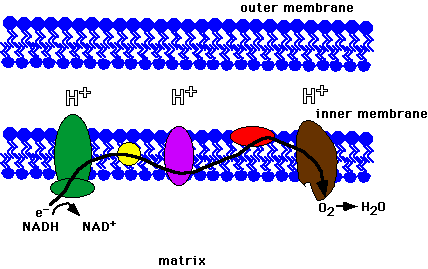
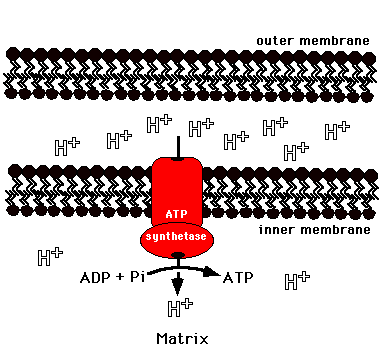

Metabolism Problem SetProblem 10 Tutorial: Acidity During Electron TransportWhat cellular compartment becomes acidic (high concentration of hydrogen ions) during mitochondrial electron transport? Intermembrane space of mitochondriaElectron transport results when NADH and FADH2 donate electrons to complexes in the inner mitochondrial membrane. The electrons flow through the complexes and are eventually donated to oxygen forming water. This process pumps protons (H+) into the intermembrane space. The gradient created (high concentration of protons in the intermembrane space and low concentration in the matrix) causes protons to flow through ATP synthetase in the inner membrane resulting in production of ATP.  |